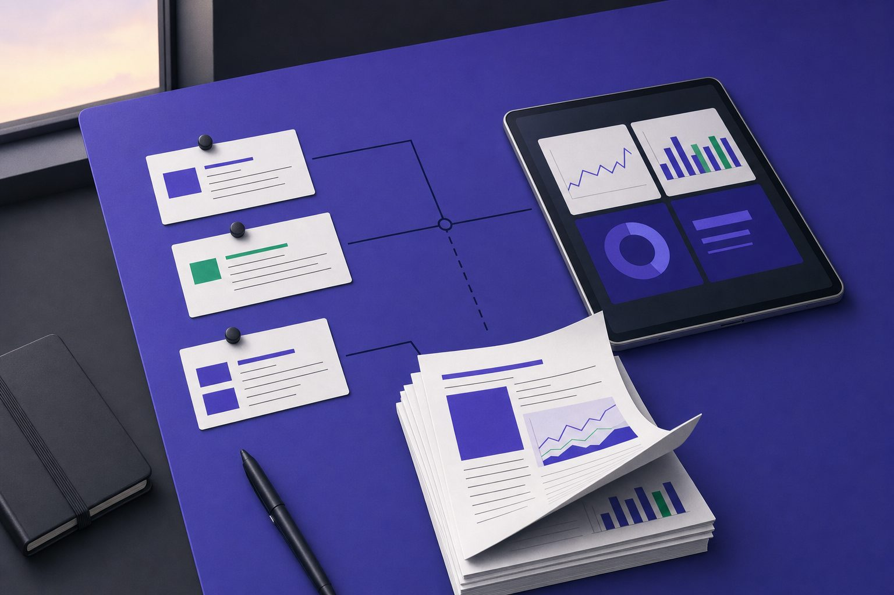
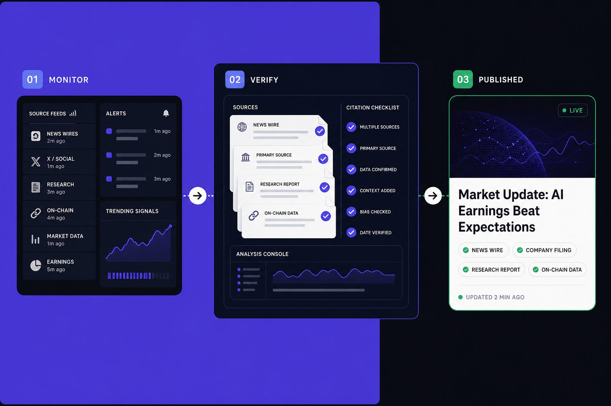
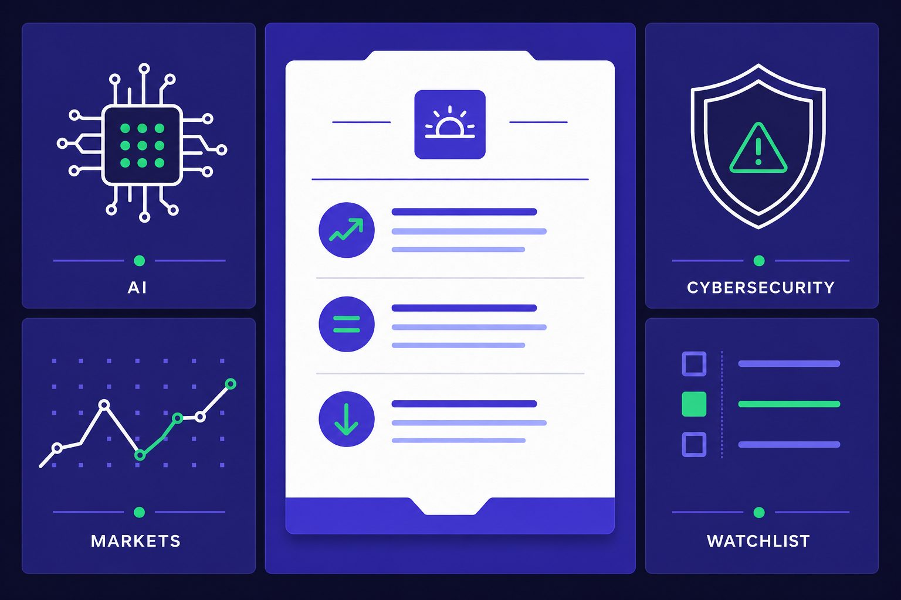
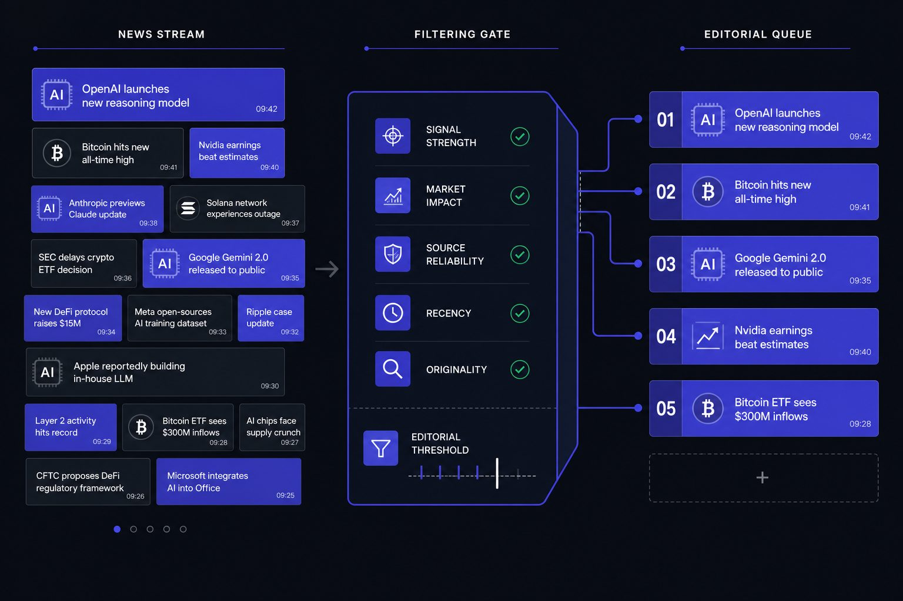
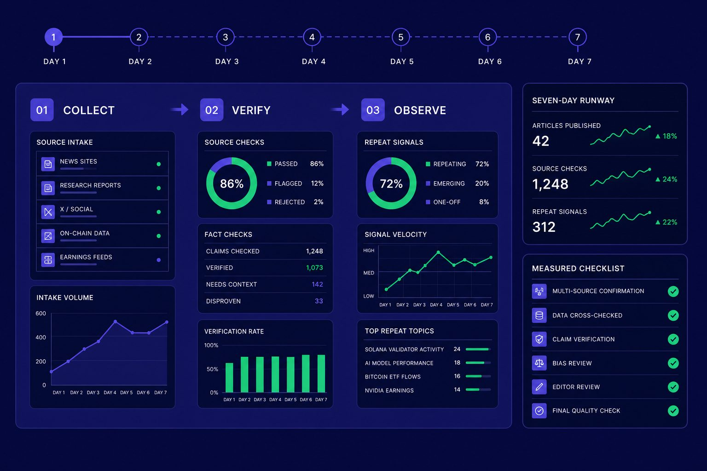
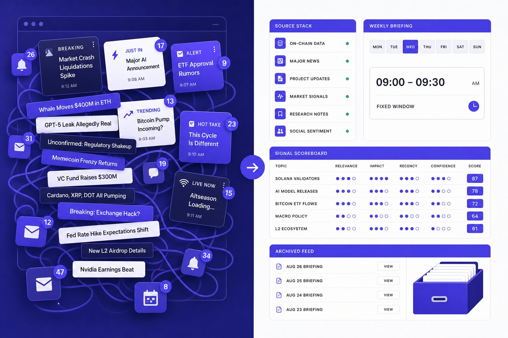

AI & Media
AI News Workflow Builds Better Daily Briefings Fast

AI news is only valuable if you can process it fast. AI news turns into noise when you read it as an endless feed instead of a workflow.
Table of Contents
Most people doomscroll because platforms decide what comes next. Relevance, signal, and context get buried under speed and emotion. According to Token Metrics AI Crypto Morning Briefing Ian Balina (Founder & CEO) - Crypto Coin Show, the right insight can mean spotting a 100X move early.
This tutorial shows you the best way to read news without doomscrolling. You will build a tight morning briefing, clear filters, simple ranking rules, and review habits that keep you grounded. By the end, you will have a repeatable process for AI, crypto news, finance, and cybersecurity in under 20 minutes a day.
AI news workflow setup and prerequisites

What You’ll Build
In this part, you’ll define a compact daily briefing. It will pull from a small set of trusted sources. Then it will rank items by relevance, not volume. Think of it like a personal editor, not an endless feed.
Your finished system should feel simple. You open one dashboard, scan the top items, save key notes, and move on. For example, you might track AI, crypto news, and cybersecurity in one place without opening ten tabs. If you need source ideas, start with 11 Best AI News Websites for Breaking Updates and Expert Analysis.
What You’ll Learn
By the end of this section, you’ll understand five core skills. You’ll learn source curation, basic scoring, time-boxed reading, note capture, and weekly refinement. Those five parts turn scattered reading into a repeatable morning briefing.
You’ll also answer two practical questions. First, what tools do you need to build a daily news workflow? Second, how many sources belong in a morning briefing? The short answer is fewer than you think.
Prerequisites
You do not need coding skills for this setup. You do need basic comfort with RSS readers, newsletters, browser bookmarks, and note apps. Optional automation tools help, but they are not required.
A simple starter stack works best. Use Feedly or Inoreader for feeds. Use Google Sheets or Notion for scoring and notes. Use Gmail, Superhuman, Instapaper, or Pocket for email triage and later reading. Keep your stack small so maintenance stays easy.
As a starting point, keep five to twelve sources in your briefing. That range gives you variety without noise. The best way to read news is not to collect everything. It is to review a short, high-trust list every day.
Why this workflow works
This workflow works because constraints create signal. Fewer sources, better filters, and fixed reading windows beat all-day grazing. You are building a lane, not a firehose.
For example, if you only check selected sources at 8:00 a.m. and 4:30 p.m., you make cleaner decisions. You stop reacting to every headline. You start comparing stories across outlets, which improves judgment. That same discipline matters when researching markets, as shown in How to Research Cryptocurrency Market News Before Making Investment Decisions.
For a visual walkthrough of this process, check out this tutorial from Creative Jane:
Part 1 Building your morning briefing

In this part, you’ll build a morning briefing you can actually finish. Your goal is not to read everything. Your goal is to catch the signal fast. That is the best way to read news, especially when AI news, markets, and security stories all compete for attention.
1. Choose your core source list
By the end of this section, you’ll know how to pick a source list that stays useful under pressure.
Start with the smallest working version. Use 5 to 8 sources total. Split them across AI, finance, cybersecurity, and one general tech outlet. Think of this like packing a carry-on bag. If it does not fit, it does not fly.
Balance the list by job, not by brand. Pick one source for original reporting. Add one for research summaries. Add one for market context. Use opinion sparingly, like salt. It should sharpen your view, not replace reporting.
For example, you might track one AI site, one market desk, one security reporter, one general tech publication, and two niche newsletters. If you need ideas, review these AI news websites for breaking updates and expert analysis. If you compare broad tech outlets, this guide on TechCrunch vs The Verge can help.
2. Set a briefing format you can finish
By the end of this section, you’ll have a simple template that turns scattered links into decisions.
A good morning briefing should take about 15 minutes. Shorter is fine. Longer usually means your system is leaking low-value inputs. Consistency beats ambition here because a briefing only works when you repeat it daily.
Use four buckets:
1. Must Read - items that affect your work, positions, or priorities today
2. Worth Saving - deeper pieces you want to revisit later
3. Watch Later - interesting, but not urgent
4. Ignore - noise, duplicates, and hot takes
This format forces a decision. You stop collecting and start sorting. For example, a policy shift in crypto news may land in Must Read. A long research recap may go into Worth Saving.
3. Create a 15 minute reading routine
By the end of this section, you’ll know how to protect your attention with a hard stop.
Set a 15 minute timer. Spend the first few minutes scanning headlines only. Open just the top few items. Then stop when the timer ends. That rule matters more than perfect coverage.
A good daily news routine feels boring in the right way. It is repeatable. It limits drift. According to Tekedia, fees in fast crypto markets can reach about 3%, which is a useful reminder that speed often carries a cost. Your morning briefing should do the opposite. It should slow you down enough to think clearly.
Part 2 Adding Filters for AI News and Crypto News

In this part, you will learn how to sort headlines before they steal your attention. This is where your AI news workflow starts acting like an editor, not a firehose. The goal is simple: protect focus so the strongest stories rise first.
1. Create topic buckets
By the end of this section, you will know how to group sources by subject, not by publisher. This matters because one feed can mix product launches, lawsuits, funding rounds, and opinion. When those stories sit together, weak items hide inside stronger brands.
Create six buckets first: AI models, regulation, startups, chips, crypto markets, and security. Think of these like inbox folders for your morning briefing. A new model release goes in AI models. An SEC action goes in regulation. A token price spike stays in crypto markets.
Yes, you can combine AI news and crypto news in one workflow. You just should not let crypto dominate the page. Keep crypto in its own bucket, then cap it at one or two top items unless a story clearly affects policy, infrastructure, or public markets.
2. Score headlines by signal
In this part, you will learn how to rank a headline before you click it. The best way to read news is to score for signal, not drama. That keeps your briefing useful when every outlet wants urgency.
Use a simple five-factor model: originality, market impact, technical depth, timeliness, and source credibility. Score each factor from one to three. For example, an exclusive report on a new AI chip export rule may score high across all five. A vague “everything is changing” piece should score low.
What’s happening here is simple. You are teaching your system to reward new facts. You are also teaching it to punish recycled framing. If you want better source selection, review guides like 11 Best AI News Websites for Breaking Updates and Expert Analysis.
3. Remove low value sources and duplicates
By the end of this section, you will know how to filter low quality headlines fast. Start by down-ranking three common offenders: duplicated wire stories, thin trend summaries, and outrage bait. These pieces create motion, but not insight.
For example, if six sites repeat the same funding round, keep the most original version and ignore the rest. If a headline makes a bold claim without numbers, documents, or named sources, score it lower. The filter is not censorship. It is attention control.
Use the same rule for crypto volatility. According to AInvest, volumes on Polymarket’s 15-minute crypto markets jumped 8x after a fee change. That is interesting, but it belongs in the crypto bucket unless it signals a broader market structure shift. For deeper triage, read How to Research Cryptocurrency Market News Before Making Investment Decisions.
Part 3 Testing Your AI News Workflow

In this part, you’ll test your system like a product. Do not change it after one bad day. Run your AI news workflow for five to seven days first. That gives you enough data to judge patterns, not moods.
Run a one week test
By the end of this section, you’ll know if your workflow holds up under real use. Treat the week like a trial period. Keep the same sources, same reading window, and same scoring rules. Your job is not to optimize yet. Your job is to observe.
For example, if Monday feels perfect but Thursday feels chaotic, that matters. A good morning briefing should survive a normal week. If it only works on quiet days, it is too fragile.
Measure signal versus noise
Now you need simple metrics. Track five things each day in a note or sheet:
1. Number of stories you opened
2. Number of stories you saved
3. Repeat topics that appeared across sources
4. Major stories you missed and found later
5. Total time spent
These numbers show whether your habit works. If you open 18 stories and save two, your filter is weak. If you save seven stories but reread none, your save pile may be junk. The best way to read news is not more input. It is better selection.
For example, if three outlets push the same funding round, count that as repeat noise. If you miss a major chip export rule or model release, mark it. That tells you where your coverage has a gap.
Fix common workflow failures
By the end of this section, you’ll know how to debug the system. If your list feels crowded, you likely have source overload. If a newsletter repeats old takes, it has gone stale. If your phone keeps buzzing, you have too many alerts. If your feed slides into gossip or hype, your topic boundaries are too loose.
Set error rules in advance. If one publication slows down, swap in a fallback source from your bench, such as the list in 11 Best AI News Websites for Breaking Updates and Expert Analysis. If your source list grows too large, reset it to your top five and rebuild slowly. Think like a product manager. You test, measure, and refine.
For example, pricing noise can distort attention fast. According to Tekedia, one market introduced a $0.50 fee in a narrow trading format. Small changes can shift behavior. Your workflow should catch meaningful crypto news, not every burst of hype.
Deploying your AI news habit and next steps

You now have a working system, not just a reading list. You built a source stack, a tight morning briefing, a scoring model, and a testing loop that helps you improve the process instead of guessing. That matters because the best way to read news is not to open more tabs. It is to make better decisions before you start reading.
Your next job is to turn this workflow into a durable habit. Lock your core source list once a month so you stop tweaking it every day. Batch notifications into fixed windows so alerts do not hijack your attention. Archive dead feeds fast, and review your scoring rules each week so they match what you actually value. If a source keeps producing noise, cut it. If a filter keeps hiding useful reporting, fix it.
Keep automation light until the manual version feels easy. After that, add simple support tools such as digest emails, saved searches, or keyword rules that surface likely hits without rebuilding your whole system. The point of automation is to protect judgment, not replace it.
From here, expand with care. You can build sector-specific lists for finance, cybersecurity, chips, or regulation, then keep a separate weekend queue for long reads and deeper analysis. That gives you speed on weekdays and context on slower days without mixing the two.
If you remember one lesson, make it this: the best way to read news is to design for signal, not volume. Want to learn more? Learn More to explore how we can help.